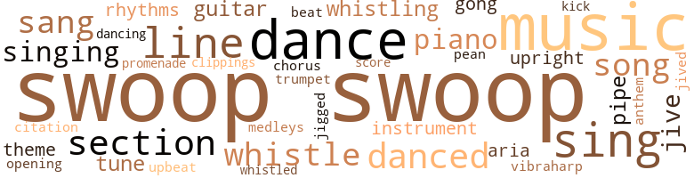
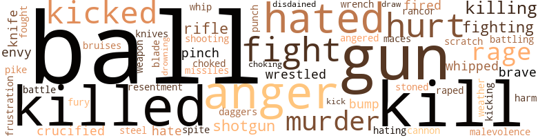
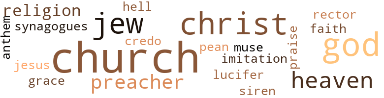

Junior Bachelor Society (The), by Williams, John A. (1976)
218 music-related terms matched in this text.
Most frequent terms in this topic: Swoop (66); music (24); dance (11); line (9); sing (9)
aria.n.01
Definition: an elaborate song for solo voice
| word | sentence |
|---|---|
| aria | And now James was suggesting that Dart do an aria from La Traviata , the part that Verdi had adapted from Dumas fils 's Camille , to show the influence of black on white . |
| aria | It 's nice of you to think about it , though , but you must have imagined how awfully thin that aria would sound with just a piano and without the woman alternating ? " |
chorus.n.01
Definition: any utterance produced simultaneously by a group
| word | sentence |
|---|---|
| chorus | The evening , glittering in green , black , and red costumes , flags and banners , moved ponderously through cute choreography , medleys by the full band , chorus groups - young voices cracked with too many rehearsals , and too many readings from poetry , a militant , foot-stomping , fist-waving rendition of " We Shall Over - come " ; the pace was upbeat , furious . |
clipping.n.01
Definition: an excerpt cut from a newspaper or magazine
| word | sentence |
|---|---|
| clippings | He had by implication lied to them , a hint here , one there , and with a scratch of the pen a plain Amsterdam flat had become a reconverted seventeenth-century merchanthouse , a showpiece of the Keizersgracht , the canal of the kings ; and yes , checks from time to time , when things were going well ; cards and gifts from all over Europe ; clippings from the smaller papers with his pic - tures . |
cornet.n.01
Definition: a brass musical instrument with a brilliant tone; has a narrow tube and a flared bell and is played by means of valves
| word | sentence |
|---|---|
| trumpet | " That 's Roy Eldridge on trumpet , " Onetha said . |
dance.n.01
Definition: an artistic form of nonverbal communication
| word | sentence |
|---|---|
| dances | All the dances they done had in this town , colored folks never had their own hall until a few years ago . |
| dances | They tried to make up dances , put in a straight-arm move or somethin like that . |
| dance | BOO WAPPA DO AH , WA-WA BOO WAPPA DO AH , WA-WA " C'mon , Bubbles , let 's dance , " Onetha said . |
| dance | Beat that bitch , Christine , Onetha thought , leading Bubbles to the small dance area . |
| dance | He started moving in a dance reminiscent of the Black Bottom , and Marvin and Clifford who fancied themselves as the best rock dancers on campus , bent double laughing and slapped palms . |
| dances | I myself could never dance those dances ; oh , my , I could n't . |
| dance | " Let 's dance , baby , " Chris said to her husband . |
| dances | She faced the mirror again and thought of when they were kids , before the war , and the semiformal dances they 'd had and how Bubbles would conic to her house , having walked self-con - sciously through the streets in a pair of Sunday pants maybe , or anyway , not everyday pants , his rented white dinner jacket and matching bow tie and pocket handkerchief , a matching hat - band around his wide-brimmed Adams hat , a red carnation for his boutonniere , carrying in his hand , as though it were the most valuable package in the world , the inevitable boxed gardenia corsage . |
| dances | But , she had noticed , they were starting to touch each other these days , and then the old music , the old dances were coming back . |
dance.v.02
Definition: move in a pattern; usually to musical accompaniment; do or perform a dance
| word | sentence |
|---|---|
| dance | For the rest of the night , they 'd dance only on the slow pieces . |
| dancing | Jackson closed his eyes quickly and tightly , and when he opened them , he saw Perkins back on the curb , holding his wrist and looking dazedly at the papers in the street now dancing in mad arcs with the passing of each car . |
dance.v.03
Definition: skip, leap, or move up and down or sideways
| word | sentence |
|---|---|
| danced | They 'd never , never danced like that before , and perhaps never would again . |
| dance | Swirl - ing , their shoes hissing against the floor , they were like shadows spinning and twisting without sound , seeming to hang in air like Nijinsky , finding beats between beats , like Jamieson ; April with a smile of disdain for all who could not dance the way they were dancing , all in less than three minutes . |
| danced | To Sandra his voice sounded wistful and she wondered which of the women here he had loved , danced with , thought about . |
| danced | But Sandra danced an - other way , just off the beat , always a second late . |
| dance | Sandra had n't wanted to dance . |
| danced | She felt intimidated by the black women ; she was sure all of them danced extremely well . |
| danced | Ken should 've danced with some - one else . |
| dance | " You dance so well . |
| dance | I myself could never dance those dances ; oh , my , I could n't . |
| dance | They thought he would snap into a buck-and-wing as soon as they said , " Let 's see you dance a little there , boy . " |
| danced | And when he danced , it was because he was happy and he wanted to , and yes , he could dance , dance his ass off . |
| dance | And when he danced , it was because he was happy and he wanted to , and yes , he could dance , dance his ass off . |
| danced | Christine , April , Iris , Diane , Evelyn , Onetha - the names danced before him like a field of cornflowers in a soft wind . |
gong.n.01
Definition: a percussion instrument consisting of a metal plate that is struck with a softheaded drumstick
| word | sentence |
|---|---|
| gongs | Up there they saw only half the action , but from up there the names sounded over the amplifiers like bronze gongs being struck : Vannie Albanese , Joe Minsavage , Hugh Daugherty , Indian Bill Geyer , Brud Holland , Al Blozis , Wilmeth Sidat-Singh , Marty Glickman , Leland Bunky Morris , Gene Berger . |
| gong | The tester ran some smelly brown fluid into the casting and suddenly the casting cracked , sounding like a gong being hit , and the chemical , breaking out of pressure , squirted into Dumpson 's eyes . |
guitar.n.01
Definition: a stringed instrument usually having six strings; played by strumming or plucking
| word | sentence |
|---|---|
| guitar | He knew what it was from the opening guitar chords . |
| guitar | The guitar chords were immediately followed by big , breathy tenor sax notes , and everyone stilled . |
| guitar | Chu Berry was still working around the theme and heavy under him , the piano , bass , drums , and guitar . |
hymn.n.01
Definition: a song of praise (to God or to a saint or to a nation)
| word | sentence |
|---|---|
| anthem | Nearly everyone knew the words to the anthem these days , at least the first verse , Ralph thought . |
jig.v.01
Definition: dance a quick dance with leaping and kicking motions
| word | sentence |
|---|---|
| jigged | Moon had burst into laughter too , and jigged his legs . |
jive.v.01
Definition: dance to jive music; dance the jive
| word | sentence |
|---|---|
| jive | Shuck and jive all they wanted , but they were getting theirs and he was getting his : money . |
| jive | I ought to make you suck my black dick , you jive turkey . |
| jived | They jived us into the cities , " Pleflin had said . |
kick.v.04
Definition: kick a leg up
| word | sentence |
|---|---|
| kick | So : they talked about you when you got near the top of the mountain ; they wanted to slow you up , kick you back down . |
medley.n.01
Definition: a musical composition consisting of a series of songs or other musical pieces from various sources
| word | sentence |
|---|---|
| medleys | The evening , glittering in green , black , and red costumes , flags and banners , moved ponderously through cute choreography , medleys by the full band , chorus groups - young voices cracked with too many rehearsals , and too many readings from poetry , a militant , foot-stomping , fist-waving rendition of " We Shall Over - come " ; the pace was upbeat , furious . |
music.n.01
Definition: an artistic form of auditory communication incorporating instrumental or vocal tones in a structured and continuous manner
| word | sentence |
|---|---|
| music | He could still see the marble steps curving down from the music room of Yves Dormoy 's house , the marble sparkling white beneath the red stair carpeting . |
| music | Dart , on the other hand , recalled Barcelona dryly , a city he passed through going to Montserrat to sing a program of gospel music , perhaps in tribute to the Black Madonna there . . . . |
| music | She wanted to know if it was true that jazz music was com - ing back , that rock had run its course , that double and triple rhythms in black music had become a multiplicity of rhythms , and how it worked out ; oh , Dart would know what she meant if he had a chance to listen to any of it . |
| music | She wanted to know if it was true that jazz music was com - ing back , that rock had run its course , that double and triple rhythms in black music had become a multiplicity of rhythms , and how it worked out ; oh , Dart would know what she meant if he had a chance to listen to any of it . |
| music | ( " Hold me close and hold me tight . . . " ) They had smiled at each other , pleased that they had found a new closeness in the music , in their movements . |
| music | Quite simply , that night they discovered another way to make love , just moving to per - fect time , anticipating precisely , to music unsurpassed . |
| music | Papadapoulous tried no music and then live jazz , and still could n't draw . |
| music | Spring or fall , it would be , the place a tent of crepe-paper streamers , Duke 's band on the record player , the speakers throwing his music across the hall and back , " Things Ai n't What They Used to Be , " and Cudjo and Evelyn , large even then , in a dark corner doing the Lindy , moving to the music as large people often do , lightly , gracefully - - there 's nothing that can match the grace of a fat man 's rolling , haughty pace - Cudjo had written those lines in his attic one summer when the jibes about his weight had sent him into hiding and where , in hot , sweating silence he exercised diligently , without losing an ounce . |
| music | Spring or fall , it would be , the place a tent of crepe-paper streamers , Duke 's band on the record player , the speakers throwing his music across the hall and back , " Things Ai n't What They Used to Be , " and Cudjo and Evelyn , large even then , in a dark corner doing the Lindy , moving to the music as large people often do , lightly , gracefully - - there 's nothing that can match the grace of a fat man 's rolling , haughty pace - Cudjo had written those lines in his attic one summer when the jibes about his weight had sent him into hiding and where , in hot , sweating silence he exercised diligently , without losing an ounce . |
| music | Over music from the car radio , Moon laughed to himself , remembering Mr. Richard , one of those old men , who loved to relate the details of how he cooked navy beans with onions and piece of fatback , a pinch of Arm & Hammer baking soda . |
| music | Moon heard music and voices . |
| music | " I was in music . |
| music | Clarie , now , he thought he was another Herb Jefferies , you understand , and Dart , over there , he had him an - other kind of music , but music right on , if you like that kind . |
| music | Clarie , now , he thought he was another Herb Jefferies , you understand , and Dart , over there , he had him an - other kind of music , but music right on , if you like that kind . |
| music | Listen to the music . |
| music | Snake wanted to cut loose , fling his body and snap it back , move every muscle in time to the music . |
| music | The music was not quite country , not quite city ; somewhere in be - tween , a little of both . |
| music | The loudspeakers were carrying the music Onetlia had just put on . |
| music | They heard the music , the voices above them , the floors creak - ing when people walked . |
| music | On the front porch he heard the music and the voices . |
| music | Onetlm clapping in time to the music and moving her body . |
| music | But , she had noticed , they were starting to touch each other these days , and then the old music , the old dances were coming back . |
| music | And by now the music did not excite ; it depressed , being so obviously a device which had failed to draw attention away from the basement and the men in it . |
| music | Even with the music play - ing , there seemed to be silence , a waiting . |
musical_instrument.n.01
Definition: any of various devices or contrivances that can be used to produce musical tones or sounds
| word | sentence |
|---|---|
| instrument | He spoke into the instrument again . |
| instruments | Moon had never liked electronic musical instruments ; there was no purity in their sounds . |
opening.n.07
Definition: the initial part of the introduction
| word | sentence |
|---|---|
| opening | Made me think of the opening line from Richard Llew - ellyn 's novel - made a great movie out of it - How Green Was My Valley . |
paean.n.02
Definition: (ancient Greece) a hymn of praise (especially one sung in ancient Greece to invoke or thank a deity)
| word | sentence |
|---|---|
| pean | The other was Comparative Modem Euro - pean Literature . |
piano.n.01
Definition: a keyboard instrument that is played by depressing keys that cause hammers to strike tuned strings and produce sounds
| word | sentence |
|---|---|
| piano | Chu Berry was still working around the theme and heavy under him , the piano , bass , drums , and guitar . |
| piano | " And Clyde Hart on piano . " |
| piano | Listening to Coleman Hawkins , Roy Eldridge , John Kirby , Sid Catlett , Bemie Addison , and Benny Carter on piano instead of alto playing " I Surrender Dear , " Christine Jackson thought , He knows . |
| piano | It 's nice of you to think about it , though , but you must have imagined how awfully thin that aria would sound with just a piano and without the woman alternating ? " |
| piano | In vanishing darkness a note was struck sharply on a piano - a key established - and a spot came on to shine on a young woman who already was singing : " Lift ev-ery voice and sing Till earth and heaven ring . |
pipe.n.04
Definition: a tubular wind instrument
| word | sentence |
|---|---|
| pipe | He caught his breath while he lit his pipe and wondered how many had read Moore 's most recent novel which he 'd assigned last week . |
| pipe | He took a deep draw on his pipe and waited for the rustle of papers , the shoving of book bags and murmuring . |
| pipe | Henderson fingered his pipe . |
promenade.n.01
Definition: a formal ball held for a school class toward the end of the academic year
| word | sentence |
|---|---|
| promenade | Invariably it was spring , or so it now seemed , the night air sweet , and their movements , everyone 's movements were a promenade of grace , an exhibition of a youth that would come to know no age , but would move through marriage , motherhood , move through time fixed in penny loafers and bobby sox and double overhanded spins of the Lindy - " Hey . " |
quotation.n.02
Definition: a passage or expression that is quoted or cited
| word | sentence |
|---|---|
| citation | " And the mayor wants to give Coach a citizenship citation . |
rhythm.n.01
Definition: the basic rhythmic unit in a piece of music
| word | sentence |
|---|---|
| beat | Nuance by nuance , beat by beat , Shandor was trying to change his play . |
rhythm.n.04
Definition: the arrangement of spoken words alternating stressed and unstressed elements
| word | sentence |
|---|---|
| rhythms | She wanted to know if it was true that jazz music was com - ing back , that rock had run its course , that double and triple rhythms in black music had become a multiplicity of rhythms , and how it worked out ; oh , Dart would know what she meant if he had a chance to listen to any of it . |
| rhythms | She wanted to know if it was true that jazz music was com - ing back , that rock had run its course , that double and triple rhythms in black music had become a multiplicity of rhythms , and how it worked out ; oh , Dart would know what she meant if he had a chance to listen to any of it . |
score.n.02
Definition: a written form of a musical composition; parts for different instruments appear on separate staves on large pages
| word | sentence |
|---|---|
| Score | " Score 's tied and the clock 's runnin out and we goin into overtime ! |
section.n.01
Definition: a self-contained part of a larger composition (written or musical)
| word | sentence |
|---|---|
| section | Suddenly he was no longer in town , no longer seen moving sure-footedly through the black section of Jewtown . |
| section | And when , once or twice a year , Mr. and Mrs. Marcus ' photo - graph appeared on the first page of the society section of the morning and evening papers , in town from Hollywood , where he was a movie producer , to visit his parents , it seemed that Wilbur Marcus never had been the hustler who sold bad whiskey to the bums in his saloon . |
| section | Moon noticed that Henderson was peering toward the section up ahead . |
| section | If a white cop had that section , they 'd never complain , just go ahead and give up the bread . |
| section | On a wall hung a hockey uniform above rows of skates , golf bags and clubs , tennis rackets of gleaming alloy , and cans of tennis balls seemed to have been grouped in an exclusive section , which had a thick carpet on the floor . |
| section | He graduated and moved into a white section of town . |
| section | If a white cop had that section , they 'd never complain , just go ahead and give up the bread . |
sing.v.02
Definition: produce tones with the voice
| word | sentence |
|---|---|
| sang | Could make me cry when he sang " OV Man River ' or " Moth - erless Child . " |
| sang | Standing , he sang : " Were you there when they crucified my lord ? |
| sang | " Oh , oh , sinners , ( This time he sang it tenderly , as if with desolation . ) |
| sing | Dart , on the other hand , recalled Barcelona dryly , a city he passed through going to Montserrat to sing a program of gospel music , perhaps in tribute to the Black Madonna there . . . . |
| sing | Dart 's gon na sing at a Black Arts Festival - its for this Friday and Sat - urday . |
| Sing | Sing out to the world : We 're married ! |
| sing | A slow flood of white silk dresses and black suits rose over the little hill where the cars were parked to the graveside , and Ralph remembered someone , a woman who was weeping , start - ing to sing disconsolately , Oh , Sissie , do n't you weep do n't you mourn , O , Sissie , do n't you weep , do n't you mourn - and other voices taking it up , male and female , pushing it to the graveside ; his father 's eyes beginning to leak ; Oliver stabbing his face with a new Irish linen handkercluef , Ralph himself letting go , his chin bobbing on his chest - The sound of the gravel under the tires brought Ralph back . |
| sing | " Libiamo , libiamo ne lieti calicishe 'd heard her husband sing in the shower this morning . |
| sang | In fact , she still seemed to hear him : " Che la bellezza infiora/E la fuggevol , fuggevol ora/S ' inebrii a volutta , " he sang , his voice fuzzed by the streaming water , which also concealed the cracking and straining . |
| sing | In vanishing darkness a note was struck sharply on a piano - a key established - and a spot came on to shine on a young woman who already was singing : " Lift ev-ery voice and sing Till earth and heaven ring . |
| sang | She sang with a desperation not quite muted by her regal cool , and clumsily the voices climbed to the pitch . |
| sang | When they were kids , at gatherings , only a few people , usually older , ever stood stiffly at attention and sang out the words ; the others mumbled , hummed , slipping and sliding around the notes , the lyrics , and were relieved when the song was over , and its echoes , pitiful , had died . |
| Sing | " Sing a song full of the hope that the dark past has taught us , Sing a song full of the hope that tire present has brought us . |
| Sing | " Sing a song full of the hope that the dark past has taught us , Sing a song full of the hope that tire present has brought us . |
| sing | " I used to sing in church here when I was a kid . |
| sing | But perhaps now , time having moved inexorably forward , I should sing another spiritual : ' Nearer My God to Thee ' - " A titter ran through the audience . |
| sing | " That boy always could sing , " Chappie said through the applause . |
| sing | First time I ever heard Dart sing . |
singing.n.01
Definition: the act of singing vocal music
| word | sentence |
|---|---|
| singing | I spent more time running than singing . " |
| singing | In vanishing darkness a note was struck sharply on a piano - a key established - and a spot came on to shine on a young woman who already was singing : " Lift ev-ery voice and sing Till earth and heaven ring . |
| singing | With everything else - the situation with Sissie , no work , singing or otherwise - he recalled the incident with utmost fidelity . |
| singing | The critic , the same one who 'd been covering the arts for the local papers for as long as Dart could remember , had been polite and properly enthusiastic about the " return of the native son , " but had supposed that the demanding rigors of singing in Europe had " taken a slight toll on a once magnificent voice . " |
| singing | Shurley concentrated on the set , saw the film of people moving into the Center , of Dart singing soundlessly while the news - caster talked . |
song.n.01
Definition: a short musical composition with words
| word | sentence |
|---|---|
| song | See him staggering along home , two , three in the morning , alone , ai n't had no luck again , humming some old sad song to himself . " |
| song | When they were kids , at gatherings , only a few people , usually older , ever stood stiffly at attention and sang out the words ; the others mumbled , hummed , slipping and sliding around the notes , the lyrics , and were relieved when the song was over , and its echoes , pitiful , had died . |
| song | " Sing a song full of the hope that the dark past has taught us , Sing a song full of the hope that tire present has brought us . |
| song | " Sing a song full of the hope that the dark past has taught us , Sing a song full of the hope that tire present has brought us . |
| songs | One of my fa - vorite songs , one they like very much in Europe , was ' The Old Rugged Cross . ' |
| song | The song was moving in its simplicity . |
swing.n.05
Definition: a style of jazz played by big bands popular in the 1930s; flowing rhythms but less complex than later styles of jazz
| word | sentence |
|---|---|
| jive | It was jive , all jive , Henderson thought . |
| jive | We all knew we were jive . |
swoop.n.01
Definition: (music) rapid sliding up or down the musical scale
| word | sentence |
|---|---|
| Swoop | Swoop . |
| Swoop | Swoop was going to shit - just like a lot of other poeple , when he discovered that the place was his , Shurley 's , down the line , and that Papa - dapoulous has been his front for years since they both knew that it was not easy for a black man to come by his liquor license unless his contacts were thick and deep . |
| Swoop | Sugar never talked about the reasons for Swoop 's stopping by so regularly . |
| Swoop | If black people like Swoop got caught in the middle , that was too bad . |
| Swoop | When Swoop first became a police officer , tire second black on the force , black wanteds were a minority . |
| Swoop | Swoop 's family had moved from the migrant cabins outside town into the city at the end of the war . |
| Swoop | Swoop had been about sixteen then when Moon and the others returned home from the war . |
| Swoop | Swoop had hated that ; still hated it . |
| Swoop | Entering the Ebenos , his face changing , slipping into a grin , as he scanned the room , Cudjo nevertheless felt the eyes on his back and wondered what the hell Swoop 's car was sitting in the parking lot for , with Swoop undoubtedly in it , so he could have an unobstructed view of the front of the restaurant . |
| Swoop | Entering the Ebenos , his face changing , slipping into a grin , as he scanned the room , Cudjo nevertheless felt the eyes on his back and wondered what the hell Swoop 's car was sitting in the parking lot for , with Swoop undoubtedly in it , so he could have an unobstructed view of the front of the restaurant . |
| Swoop | " Swoop 's sittin out there in the parking lot , " Cudjo said . |
| Swoop | " But if Swoop 's got some papers on him ? " |
| Swoop | Still , it would be a helluva collar for ole Swoop . |
| Swoop | Not finding any on the immediate block , Swoop enlarged his search for three blocks in each direc - tion . |
| Swoop | " Well , if Swoop was watching us , you can bet there were cops watching his mother 's house . " |
| Swoop | Cudjo said , " Enough to have Swoop sittin out there , that 's what . |
| Swoop | " Swoop was sittin out there in his car all night , " Cudjo said . |
| Swoop | But we figure Swoop and the whole police force must have some papers on him , a warrant or something . " |
| Swoop | " Were gon na try and keep an eye on Swoop , honey , " Bubbles said . |
| Swoop | And she ai n't seen no cop but Swoop cruising through there , right ? " |
| Swoop | " I think I know Swoop pretty well . " |
| Swoop | The thing is , maybe I can fuck with Swoop behind him being on the pad , y ' dig ? |
| Swoop | " As hard as you can come down on Swoop , " Cudjo said care - fully , " he can come down on you harder . |
| Swoop | Every time Swoop comes in my store , man , pickin up that bread ? |
| Swoop | We got some stuff for ole Swoop . |
| Swoop | Swoop had not bothered to find out where ; the information would come to him as John 's head on a platter was delivered to Salome . |
| Swoop | Swoop lowered the glasses . |
| Swoop | They did n't own any restaurants ; they had n't taped any conversations ; the stopper they held for Swoop was his , Shurley 's stopper , and they had to play when he wanted to , not because they were nervous . |
| Swoop | Ca n't tell her about Swoop , she 'd slut , Bubbles thought . |
| Swoop | His face half-hidden behind his upraised beer mug , Swoop concluded that he 'd have to work something else out . |
| Swoop | Check out that Swoop from the minute he walks into the place . " |
| Swoop | Bub - bles looked for Swoop . |
| Swoop | " Uh-huh , uh-huh , " Bubbles said , still searching the crowd for Swoop . |
| Swoop | Get over there quick and keep an eye out for Swoop . " |
| Swoop | The more people Moon was surrounded by , the less chance Swoop would swoop , Bubbles hoped ; God , he hoped that would be the way . |
| swoop | The more people Moon was surrounded by , the less chance Swoop would swoop , Bubbles hoped ; God , he hoped that would be the way . |
| Swoop | He did n't need for Swoop to be kicking in the door right now , when he was holding down the fort all by him - self . |
| Swoop | " And every step of the way Swoop 's been there , watchin , spyin . |
| Swoop | Nobody else , just Swoop . " |
| Swoop | To Swoop he said , " Swoop - " Swoop raised his hand placatingly , but his eyes were fixed on Moon . |
| Swoop | Cudjo asked , moving to a posi - tion in front of Swoop . |
| Swoop | Swoop said . |
| Swoop | Swoop said , " Ai n't no bullshit . |
| Swoop | Swoop looked around . |
| Swoop | Fuck a Swoop , he was thinking . |
| Swoop | They sure want out of this shit , Swoop was thinking . |
| Swoop | " You were saying , " Swoop reminded him . |
| Swoop | Swoop came forward in his chair , stroking his chin . |
| Swoop | Swoop did n't know him . |
| Swoop | Swoop looked down at the floor . |
| swoop | For a moment he wished he had carried out his original plan ; to swoop him , walk him out handcuffs and all . |
| Swoop | Swoop looked first at him , with surprise , and then looking at the others , he saw that they were afraid of him . |
| Swoop | Black men un - derstand that very well , Swoop thought . |
| Swoop | He leaned toward Swoop . |
| Swoop | Swoop looked around , fixed his eyes on Jackson . |
| Swoop | Swoop pointed at the tape recorder . |
| Swoop | Snake swung his eyes slowly from Swoop to Dart . |
| Swoop | He faked with his left , a sudden , fanglike movement , as Chappie had taught him , and Swoop jerked aside , and into the path of a right that lifted him partially out of his chair and dropped him back into it . |
| Swoop | " You motherfucker , " Swoop hissed . |
| Swoop | Moon said , holding the money , pulling it back as Swoop reached out for it . |
| Swoop | Swoop . |
| Swoop | Unless you come up with something else , Swoop 's going part way with me . |
| Swoop | Swoop said , " Not a goddamn thing . " |
| Swoop | He ducked back down upon the seat when he saw Swoop walking quickly from behind Bubbles ' house . |
| Swoop | When Swoop drove by , Moon started his car , pulled into a drive and backed out and followed at a distance . |
| Swoop | Fighting sleep , Swoop pulled onto Athens Boulevurd . |
| Swoop | Moon pulled out fast , then slowed as he came up on Swoop . |
| Swoop | He slowed to match his speed and held the .38 straight out , to - ward the cop , and felt the gun lurch in his hand , saw yellow , jagged flame lick out again and again , saw , with satisfaction , the surprise in Swoop Ferguson 's face , then he mashed down on the gas and sped away as Swoop 's car curled toward the shoulder of the road , then down into a ditch and up the other side at a sharp angle . |
theme.n.03
Definition: (music) melodic subject of a musical composition
| word | sentence |
|---|---|
| themes | Papers were in neat stacks on its top ; old themes stu - dents never claimed , notices from the department chairmen , the various committee chairmen , the chancellor 's office . |
| theme | Chu Berry was still working around the theme and heavy under him , the piano , bass , drums , and guitar . |
tune.n.01
Definition: a succession of notes forming a distinctive sequence
| word | sentence |
|---|---|
| line | Toomer 's line came to him : " And when I 'd make a long clean shot , she 'd clap . . . Clarence Henderson had been , was still , but to a lesser extent and for different reasons , Dutilleul , the Walker-Through-Walls . |
| line | ( This line rose , demanding , grief-stricken . ) |
| line | The girls would have to hang on until he set up a line for them . |
| line | They were people going someplace , not coming back from somewhere else , losers ; wait - ing tables for them , therefore , was not the end of a line . |
| lines | I was the only one picking up lines , so I had to carry the ball . |
| line | They found his half-empty bottle of gin and a good-sized bass on his line . |
| tune | " A tune we used to know when we were kids . " |
| tune | Shurley winked back and peeked up from his food to see what their reac - tion would be to the next tune . |
| line | Made me think of the opening line from Richard Llew - ellyn 's novel - made a great movie out of it - How Green Was My Valley . |
| line | Nine , ten , the faces filled with the fat of innocence ; twelve , thirteen , eyes dancing , the fat gone ; fifteen , sixteen , seventeen , the faces set in the determination of athletes , smaller copies of Singh , Gregory , Holland , Jefferson , Owens , Peacock , Cooooooool Papa Bell , Gibson , and of the white boys , too ; Chappie , ramrod stiff , the last man in line , the only man , centered , coach , scoutmaster , ageless , pin-striped or chalk - striped , settled mustached face , lean hands , long fingers . |
| line | You know my line . |
| line | He 'd been younger then , and half an hour seemed like enough time , even though you spent about fifteen minutes of it on line . |
| tunes | The top sheet was his selection of the ten most popular tunes of the week . |
upbeat.n.02
Definition: an unaccented beat (especially the last beat of a measure)
| word | sentence |
|---|---|
| upbeat | Chops 's stories were all upbeat : everybody making a million , everyone with twenty closets filled with clothes and shoes . |
upright.n.02
Definition: a piano with a vertical sounding board
| word | sentence |
|---|---|
| upright | Swoop sat upright , glancing at his watch . |
| upright | Shurley sighed and sat upright . |
vibraphone.n.01
Definition: a percussion instrument similar to a xylophone but having metal bars and rotating disks in the resonators that produce a vibrato sound
| word | sentence |
|---|---|
| vibraharp | Then , as if approaching from a long way off , they heard Lionel Hampton 's vibraharp . |
whistle.n.01
Definition: the sound made by something moving rapidly or by steam coming out of a small aperture
| word | sentence |
|---|---|
| whistles | Moon remembered times when carried forward by the momentum of the pack , they made it through the gates , pushing and punching cops and ROTCees alike , until whistles rent the air summoning reinforcements to push out the pack . |
whistle.v.01
Definition: make whistling sounds
| word | sentence |
|---|---|
| whistle | When he came out , his baseball glove strapped to his belt , D'Artagnan Foxx began to whistle . |
| whistling | Rounding the corner , Dart broke off Ills whistling to push against the door that led upstairs to Moon 's house . |
| whistle | They first noticed him on warm , humid summer nights , his dappled-gray horse , head bent , blinders on , pulling his popcorn and ice cream wagon down the streets , a little steam whistle piping a steady note . |
| whistling | Shurley watched him shuffle to the kitchen , whistling . |
| whistling | Boy , Shurley thought , it sure went fasti He smiled listening to Sugar alternately cursing and whistling . |
| whistle | Sometimes , during a game , hungering for the cheers the backs and ends got , Cudjo , after making a spectacular tackle or block , would lay where he had fallen , listening , pleased , to the refs whistle , and watch through a stricken face the trainer as he straddled him and pulled at his belt to give him air he did not need . |
| whistle | He got on line just as the whistle blew , and shuffled with it to the coffee bar , nodding and waving to the black men . |
| whistle | " Anytime , " Bubbles said , as the whistle blew ending lunch hour . |
| whistled | They stood and clapped and whistled , and as the mayor made his way back to his seat , Moon Porter in velvet black tie , sweating slightly , slipped into the room , squeezing between standing people and tables until he found the JBS group and moved next to his mother ; the people clapped as Bubbles , his arm around Chappie , led him to the mike . |
231 violence-related terms matched in this text.
Most frequent terms in this topic: ball (57); gun (15); kill (12); anger (11); killed (11)
abrasion.n.01
Definition: an abraded area where the skin is torn or worn off
| word | sentence |
|---|---|
| scratch | He had by implication lied to them , a hint here , one there , and with a scratch of the pen a plain Amsterdam flat had become a reconverted seventeenth-century merchanthouse , a showpiece of the Keizersgracht , the canal of the kings ; and yes , checks from time to time , when things were going well ; cards and gifts from all over Europe ; clippings from the smaller papers with his pic - tures . |
anger.n.01
Definition: a strong emotion; a feeling that is oriented toward some real or supposed grievance
| word | sentence |
|---|---|
| anger | Henderson felt another surge of anger . |
| anger | Ken vacillated between anger and helplessness , threatening to send her back home in one breath , and trying to soothe her in the next . |
| anger | Sensing his frustration , Sandra grew angry , and in that anger , she began moving faster ; her steps and whirls were more decisive , even anticipatory of his moves . |
| anger | His anger had gone through his sleep like lightning fading weakly over the horizon . |
| anger | He had n't brought up the note ; he had been afraid to , and that had caused his anger to gain strength and shift back upon him - self , and it burrowed beneath his fear . |
| anger | Then with a cold anger : " They take you for granted . |
| anger | It was this , not anger , which made Swoop Ferguson utter a low , sibilant , Shit . |
| anger | Now Bubbles spoke ; Ills words came heavily , loaded with anger and accusation . |
| anger | He stoked a righteous anger . |
| anger | Now , approaching their home , Sandra felt his anger . |
| anger | All the anger of the day , an even heat , steady , filled him . |
anger.v.02
Definition: become angry
| word | sentence |
|---|---|
| angered | Could Rick have been ashamed of him because he worked in a foundry - Onetha saw the stricken look that flashed on his face for a part of a second , then vanished ; she 'd been his wife long enough to have seen what others could not , and she bristled at the idea that Bubbles had not been the best of fathers ; she was angered that , while in the process of trying to make everyone feel better , he had stumbled momentarily into depression himself . |
battle.v.01
Definition: battle or contend against in or as if in a battle
| word | sentence |
|---|---|
| battling | Over fifteen years of writing with one hand , and battling the sys - tem that would not acknowledge that it had produced him with the other , had not embittered as much as wearied him . |
| battle | He was able to battle the ebb and flow of at - traction , to handle it lightly , knowing that his base , his psyche was black , all of it , and that in that blackness lay his reason for existence . |
blister.v.02
Definition: subject to harsh criticism
| word | sentence |
|---|---|
| whipped | Be talkin about I sure whipped that so-and-so 's head . |
bruise.n.01
Definition: an injury that doesn't break the skin but results in some discoloration
| word | sentence |
|---|---|
| bruises | When these men were little boys , they did all the runnin , I did n't ; they were gettin the bumps and bruises and gettin so tired they could n't boogie-woogie , I did n't ; they wanted to be somebody , otherwise , there was n't one single thing I could 've done for them . |
bump.n.01
Definition: a lump on the body caused by a blow
| word | sentence |
|---|---|
| bump | Fasten , flip the box , vibrate the core down , swing the box back over , quickly but softly - a bump would crack the core - snatch up the oil and treat the fins in one motion , then lift the whole business , forty pounds to the belt , and start all over again . |
| bumps | When these men were little boys , they did all the runnin , I did n't ; they were gettin the bumps and bruises and gettin so tired they could n't boogie-woogie , I did n't ; they wanted to be somebody , otherwise , there was n't one single thing I could 've done for them . |
cannon.n.04
Definition: heavy automatic gun fired from an airplane
| word | sentence |
|---|---|
| cannon | From within he could spike their cannon , defuse their shells . |
contemn.v.01
Definition: look down on with disdain
| word | sentence |
|---|---|
| disdained | His perfectly round head , upon which he disdained any attempt at an Afro , was cropped close , a part nickered in by the barber 's scissors . |
crucify.v.01
Definition: kill by nailing onto a cross
| word | sentence |
|---|---|
| crucified | Standing , he sang : " Were you there when they crucified my lord ? |
| crucified | " Were you there when they crucified my lord ? |
dagger.n.01
Definition: a short knife with a pointed blade used for piercing or stabbing
| word | sentence |
|---|---|
| daggers | Cudjo heard the furnace humm on , and knew the heat was being pushed up into his house ; that his bedroom would be warmed precisely to 68 degrees and that daggers of cold could not , as they had in the homes he lived in as a child , stab him . |
draw.v.23
Definition: pull (a person) apart with four horses tied to his extremities, so as to execute him
| word | sentence |
|---|---|
| draw | And by now the music did not excite ; it depressed , being so obviously a device which had failed to draw attention away from the basement and the men in it . |
drown.v.04
Definition: kill by submerging in water
| word | sentence |
|---|---|
| drowning | Bounce , manl The small apartment , with its heavy , dark 1930s furniture , the nondescript , gray , hand-me-down tapestries on the walls , the ro - togravure photos in warping , grease-stained frames on the chests and tables , was silent except for the periodic electronized bellow of eighty thousand voices drowning out the monotones of the an - nouncers . |
envy.n.01
Definition: a feeling of grudging admiration and desire to have something that is possessed by another
| word | sentence |
|---|---|
| envy | The movement , automatic , just short of being authoritarian , made Henderson feel a sensation of envy . |
| envy | He felt , just for a second , a surge of envy that he and his wife were not at this very moment entering the Ebenos to renew old friendships ; they did not have many friends . |
fight.n.02
Definition: the act of fighting; any contest or struggle
| word | sentence |
|---|---|
| Fighting | Fighting sleep , Swoop pulled onto Athens Boulevurd . |
fight.n.05
Definition: a boxing or wrestling match
| word | sentence |
|---|---|
| fights | Somebody had to take their fights . |
| fight | Marcus had been a friend of D'Arnica , a saloonkeeper , bit-sized racketeer , and fight promoter . |
| fight | You got into a fight and you did n't think about the ole one-two or the hook , jab , and cross , the position of your feet . |
| fights | Dumpson watched the city move past him with an unaccount - able sinking feeling in his stomach , thinking now of Bloodfield and the stabbings , the fights , the screams , the sudden shriveling of soul and skin at the sounds of flesh striking flesh . |
fight.v.02
Definition: fight against or resist strongly
| word | sentence |
|---|---|
| fight | " You want that girl , Chops , you got to fight for her , boy . |
| fighting | One moment they had been invisi - ble , and the next , gigantic , fucking and fighting all over the screen , acting out the fantasies of white film company executives and perhaps from time to time nightmaring for many the dream first packaged by immigrants ; immigrants who , out of their own sufferings , perceived the secret of the American heart , its fear and foolishness and gave it body , a golem in blackface , but made it a joke . |
| fighting | Little frowns mark their faces ; perhaps they 've been fighting . |
| fight | Jack Dempsey ran from Johnson ; did n't want to fight him . |
| fought | They fought among them - selves , sure , but remained bound to each other , a tribe , fatherless for the most part , seeking a reflection of manhood mainly from each other ; they were sons who would not or could not bend to matriarchal will . |
frustration.n.03
Definition: a feeling of annoyance at being hindered or criticized
| word | sentence |
|---|---|
| frustration | Sensing his frustration , Sandra grew angry , and in that anger , she began moving faster ; her steps and whirls were more decisive , even anticipatory of his moves . |
fury.n.01
Definition: a feeling of intense anger
| word | sentence |
|---|---|
| rage | He swung in rage with all his might , catching Collins flush in the face , and felt teeth flying wetly out of his mouth . |
| rage | He may see and touch the truth , but he will walk away wanting it to be a mirage , willing it to be a mi - rage . |
| rage | She saw his rage and met it with eyes burning , her head up . |
| rages | The way they were opened his eyes , revealed his ability to walk through walls , and he saw them now , the younger women on his campus , in his class , on his travels , heard them in their rages , heard even better the plaintive echoes , like the distant sound of iron bells , and cursed their mutual history . |
| fury | Tom between weariness and fury , Ezzard Jackson walked quickly over the worn purple rug to the elevator . |
| rage | Past them , his rage was bound - less , yet he knew there was nothing he could do for the moment . |
gag.v.06
Definition: cause to retch or choke
| word | sentence |
|---|---|
| choked | Onetha , her long , sculpted face bunching up now , almost choked on her coffee , and they were off again , laughing . |
| choking | " Yours in Blackness , " Cutting read aloud , and burst into more laughter , choking it off as they saw Jackson coming up behind them . |
gun.n.01
Definition: a weapon that discharges a missile at high velocity (especially from a metal tube or barrel)
| word | sentence |
|---|---|
| gun | Big gun on campus , lots of notches in the handle , but Henderson was not one of them . |
| gun | In the shadows of the hood of his chair Moon felt under the cushion for his own gun . |
| gun | All because of this - But Collins had seen him feeling for his gun and whipped out his own . |
| gun | Collins said holding his gun lower now , closer to its holster . |
| gun | " You pimp bastard , " Collins shouted , thrusting forward his gun to spearhead his rush . |
| gun | Moon cried , backing up quickly , but Collins was upon him and he grabbed for the cop 's gun hand , wrapped both hands around it and forced the gun straight up in the air . |
| gun | Moon cried , backing up quickly , but Collins was upon him and he grabbed for the cop 's gun hand , wrapped both hands around it and forced the gun straight up in the air . |
| gun | He wrenched the gun free and disdainfully jammed it into his back pocket . |
| gun | Moon saw Collins , still stumbling , make a small , swift move , and in desperation flung himself on the cop and wrestled the sec - ond , smaller gun , away from him . |
| guns | " Two guns and a blackjack , " Moon said . |
| gun | With a roar Collins was up , lunging for the gun in the chair seat . |
| gun | If a cat whips out a gun on you , forget it . " |
| gun | He imagined a starter 's gun , and he started to run crisply , his tie snapping in the wind . |
| guns | No , they did n't know from no Collins , and Moon suspected that given the opportunity , if they had n't had it already , the way they swaggered around here with their hand - guns hanging ready , they 'd be just the same as Collins . |
| gun | He was glad Cudjo had taken the gun , because it sure would n't have been cool to blow that Dart nigger away . |
| gun | He slowed to match his speed and held the .38 straight out , to - ward the cop , and felt the gun lurch in his hand , saw yellow , jagged flame lick out again and again , saw , with satisfaction , the surprise in Swoop Ferguson 's face , then he mashed down on the gas and sped away as Swoop 's car curled toward the shoulder of the road , then down into a ditch and up the other side at a sharp angle . |
| gun | Moon took off his wig and put the gun in it . |
hate.v.01
Definition: dislike intensely; feel antipathy or aversion towards
| word | sentence |
|---|---|
| hated | Sure hated white people . |
| hated | He knew the contents by heart now , and hated and feared every word . |
| hated | Swoop had hated that ; still hated it . |
| hated | Swoop had hated that ; still hated it . |
| hated | However , many of his people would have hated him anyway . |
| hated | He hated the wind sprints , and the laps killed him . |
| hated | So many people hated him that , even if they knew , they would have cheered for her . |
| hate | I hate this city , Simone thought . |
| hating | - and us hating that Irish fuck of a coach - it dawned on me : we had a team , and he did n't give a damn what we were as long as we won and we could not win unless we were together . |
| hated | The kids were big ; they 'd be all right , and there would be no more notes from people who must have hated Christine as much as they hated him . |
| hated | The kids were big ; they 'd be all right , and there would be no more notes from people who must have hated Christine as much as they hated him . |
| hate | And they hate Moon , because he done come flying out of the night landing in here with a problem that could destroy ail of them and me , too . |
hurt.v.04
Definition: cause damage or affect negatively
| word | sentence |
|---|---|
| hurt | The man who moves the fastest gets hurt the least . |
injury.n.01
Definition: any physical damage to the body caused by violence or accident or fracture etc.
| word | sentence |
|---|---|
| harm | I talk about things , but I do n't mean any harm . |
| hurt | When her husband 's eyes fell on her they were cold , contemp - tuous , not unmixed with hurt . |
kick.v.04
Definition: kick a leg up
| word | sentence |
|---|---|
| kick | So : they talked about you when you got near the top of the mountain ; they wanted to slow you up , kick you back down . |
kick_back.v.02
Definition: spring back, as from a forceful thrust
| word | sentence |
|---|---|
| kicked | Hissing , Moon kicked Collins in the ass . |
| kicked | Moon kicked over the chair and Collins ' service revolver and his own .32 fell to the rug out of reach . |
| kicked | He kicked him . |
| kicked | Jackson said when they got on , " I remember ole Clarie got caught in a revolving door running through the lobby of this joint , and some bellboy kicked his ass good . " |
| kicked | " I remember that time we was all walking home after a game at the Center , and ran into that Italian man who 'd kicked that little colored kid in the ass , and we jumped him . |
| kicking | He did n't need for Swoop to be kicking in the door right now , when he was holding down the fort all by him - self . |
| kicked | And he began to remem - ber to move , that he could move ; he kicked and stroked and the brown became less brown , a tan , a beige , an almost gold , the sun and blue sky , the same greening trees , the same corduroyed footbridge , the faces thrust over its ropes , hands somehow con - nected to those faces reaching down . |
kill.v.10
Definition: cause the death of, without intention
| word | sentence |
|---|---|
| killed | Heard they killed his father down home . |
| killed | Blight , they said , had killed them all . |
| kill | " Look , kid , do n't kill the job , whaddayasay ? |
| kill | Do n't kill the job , okay ? " |
| kill | Pretty down there . . . " Shit , Moon was thinking , I let Gail go with this nut for a week , he 'd either kill her there or try to run to the South Pole . |
| kill | " I 'm gon na kill you , Moon , " Collins said , grinding his teeth . |
| kill | Collins would close him down at the least and kill him at the most . |
| kill | I kill writers . |
| killed | He hated the wind sprints , and the laps killed him . |
| killed | The foundry had just about killed him , and he 'd hidden the fact from Evelyn as long as possible . |
| killed | He 'd almost forgotten his boyhood autumns , probably because of football , when the older men , sniffing the frost in the air , memo - ries of the hunt in southern forests given voice , took down their rifles and shotguns , gave them cleanings they did n't need , and went for their hunting licenses ; he 'd not remembered the taste of fried squirrel or rabbit killed by Uncle Jasper and cooked by his mother . |
| kill | Ralph un - derstood later ( he had not really understood then ) that at that moment he had been standing next to and holding hands with a deliverer of death ; a man whose vision of a loaf of bread had been stronger than the will , though not the ability , to kill . |
| killing | He had said this last night as the new hunters poured in from the cities , lugging their superhigh-powered rifles , the 357s used for killing elephant , the boxes upon boxes of ammunition , their expensive scopes . |
| Killing | Killing was as common as having a cold . |
| killed | Cops even killed each other with predictable regularity . |
| kill | He would kill downstairs . |
| Kill | Kill . |
| Kill | Kill . |
| Kill | Kill . |
| kill | I want to kill him . " |
| killed | " He got killed in Korea , " Snake said , and a silence fell until Snake spoke again . |
| kills | One person kills another . " |
| kill | " He was trying to kill me . " |
| kill | Ole bad Moon did n't kill just anybody , you understand . |
| killed | He killed a cop . |
| killed | " Yeah , you so cool , you killed a vice cop . " |
| Killed | Killed somebody , Shurley was thinking . |
| killed | If he could have done it and got away with it , he 'd have killed a long time ago . |
| Killing | " Killing heavy . " |
| Killed | " Killed a cop . |
| killed | Like Perk 's almost being killed . |
| Kill | " Kill him , " Moon said . |
| kill | " Do n't kill him , " Cudjo said . |
killing.n.02
Definition: the act of terminating a life
| word | sentence |
|---|---|
| killing | That face , the calculating smile upon it , and Henderson recalling a Saturday af - ternoon when he had intercepted , cut for the sidelines , the high school crowd on its feet , and the October sun gleaming on Moon 's helmet ( no face guards then ) ; the safety man angling over to pick them up , and Moon , the sun burnishing his helmet to gold , seeming to gather up , draw all his moving parts to - gether , delivered himself like shot from a sling , low , perfectly low - not a running block , but a killing block - knee-high , and took out the safety with a sound heard all over the field , a sound accompanied by the dull crack heard only by the three of them . |
knife.n.02
Definition: a weapon with a handle and blade with a sharp point
| word | sentence |
|---|---|
| knife | They stood at the entrance to the kitchen watching Sugar spin , wheel , settle and begin sharpening a knife . |
| knife | Chappie waited , tapping his knife on the tablecloth , until it was almost quiet again . |
| knives | Shurley raised his chin toward Mickey Mouse as , suddenly , the table became busy with platters being passed back and forth , knives screeching on plates , and with conversation muted by food in the mouth . |
mace.n.01
Definition: (trademark) a liquid that temporarily disables a person; prepared as an aerosol and sprayed in the face, it irritates the eyes and causes dizziness and immobilization
| word | sentence |
|---|---|
| maces | Cruising slowly down the street , Bubbles knew that his neigh - bors would n't be up and into their cars until nine or nine-thirty , rushing out along their privet-hedged walks in dark , well-cut suits and white shirts and ties , black faces set in the same gri - maces of anxiety he 'd seen on the faces of whites in similar neighborhoods in the movies , on television , in the newsclips . |
malevolence.n.01
Definition: wishing evil to others
| word | sentence |
|---|---|
| malevolence | Moon fumbled with his fly , and carried away by bis joyous malevolence , removed his eyes from the cop for a half second , seeking the catch . |
malice.n.01
Definition: feeling a need to see others suffer
| word | sentence |
|---|---|
| spite | Looking across the room Bubbles sensed that Moon was , in spite of the three of them , alone , with things pressing in , and he remembered one of the first summers at Boy Scout camp when it had been so warm that the earth was hot underfoot , and the water in the river had lowered ; playing on the bridge , Bubbles had fallen into the river and not having passed his second-class swimming test of fifty yards , forgot that he could do at least twenty-five ; panic accompanied his fall , enlarged with the splash , and all was quiet , brown and warm , the sun a dull glow at the surface ; he could not seem to rise ; he was alone . |
murder.n.01
Definition: unlawful premeditated killing of a human being by a human being
| word | sentence |
|---|---|
| Murder | Murder them . |
| murders | But the un - solved murders , a big city disease once , were growing in number here . |
| murder | The newest bulletin was an APB on a Walter " Moon " Porter , alleged to be a pimp , who was wanted for questioning in the murder of a Hollywood , California , police officer . |
| Murder | " Murder papers . " |
| murder | " What do you mean ' murder ' ? " |
| murder | " You know what murder is , do n't you ? |
musket_ball.n.01
Definition: a solid projectile that is shot by a musket
| word | sentence |
|---|---|
| ball | It 's the same way those cracker schools play ball , now they got some black players on their squads . |
| ball | Ole Morris ran that ball all the way down to the - five and they send for Kiick to take it in . |
| ball | Just drilled in there at practice and God help whoever had the ball . |
| ball | It takes something to run full speed at a man coming toward you at full speed , a ball under his arm . |
| ball | They got the ball again ? |
| ball | A pop fly to a kid wearing one of those gloves was an automatic single , cause the ball always bounced out . |
| ball | Note , do n't throw it away , Bradshaw ; do n't hand them the goddamn ball , now . |
| ball | Good hitter , good shortstop - as long as the ball went to his right . |
| ball | He was like Warfield , just naturally good , but his mind was somewhere else , and he only played ball because everyone else did . |
| ball | And played some ball . |
| ball | You talked different things with different boys ; bow to draw a cue ball or make it run , or how to smack the water in a racing dive , little extra things like that . |
| balls | The others straggled up with gloves , and they sat on the porch bannisters or on the floor until Chappie , usually with bloodshot eyes and reeking breath , called from downstairs , the bag with the bats , balls , and catcher 's equipment slung over his shoulder . |
| ball | I coulda had a different life if Buonfiglio 'd given me that goddamn ball . |
| ball | Too late to be sorry about not using the GI Bill , just like not getting the ball from Buonfiglio that time . |
| ball | Raking the leaves and playing ball . |
| ball | When Bubbles got in , Buonfiglio , the quarterback , called the play in which he faked giving Bubbles the ball , kept it himself , and hit the center , Bubbles remembered , some thirty years away from it now , how he pulled at the count of two , charged around faking receipt of the ball and kept on driving around the left side where he had five steps easy on Western 's end , forget the tackle . |
| ball | When Bubbles got in , Buonfiglio , the quarterback , called the play in which he faked giving Bubbles the ball , kept it himself , and hit the center , Bubbles remembered , some thirty years away from it now , how he pulled at the count of two , charged around faking receipt of the ball and kept on driving around the left side where he had five steps easy on Western 's end , forget the tackle . |
| ball | You did n't know I used to play ball , did you , Collins ? |
| ball | Enjoyed it the way he 'd enjoyed playing ball . |
| ball | Ohl If I 'd had that ball , I ' da scored , man . |
| ball | When Bubbles was a boy they had to chase the goats off it before they could play ball . |
| ball | The ball was a little high ; Bubbles could swear it was humming , but he reached up , coming off the ground in a picture pose , felt the ball slap his hands and he pulled it in . |
| ball | The ball was a little high ; Bubbles could swear it was humming , but he reached up , coming off the ground in a picture pose , felt the ball slap his hands and he pulled it in . |
| ball | " If you throw em right , I 'll get em , " Bubbles said , spiraling the ball up between them . |
| ball | Bubbles gripped the ball and lofted a soft pass in Cudjo 's di - rection . |
| ball | " Sure ai n't , " Bubbles agreed , reaching up to catch the ball thrown in by one of the youngsters . |
| ball | " Shit , he played some ball after we got out , " Bubbles reminded them . |
| ball | Les play some ball . " |
| ball | Walter Porter , The Moon , baddest tackle in high school foot - ball history . |
| ball | During that summer when they were trying to decide what they wanted to do , they played ball in Jefferson Park . |
| ball | The first play of the game Bubbles , taking the ball and fading back to look for the Tucker kid , sidestepped first one , then another defender , who 'd got by Cudjo , Shurley , and the rest of the paper . |
| ball | But , the way Ken had put it long ago determined the direction they had taken : " In that game against Penn State for the Lambert Trophy , I carried the ball four times out of every five we had the ball . |
| ball | But , the way Ken had put it long ago determined the direction they had taken : " In that game against Penn State for the Lambert Trophy , I carried the ball four times out of every five we had the ball . |
| ball | I was the only one picking up lines , so I had to carry the ball . |
| ball | Cudjo drove on , reflecting how he had not been out to play ball on Saturday in three weeks . |
| ball | How about Katuzak who had caught a ball of exploding molten brass right in the gut ? |
| ball | Shurley tells me you have n't been out to play ball in three weeks . |
| ball | " - does n't mean that they 're any less manly , because they do n't want to play ball , " Dart said . |
| ball | Cudjo 's cue slid deftly back and forth through his finger bridge ; it darted forward , smacking the cue ball sharply , and it hit the three ball , which plunged smartly into the pocket , and then , as if magnetized , the cue ball followed it right in . |
| ball | Cudjo 's cue slid deftly back and forth through his finger bridge ; it darted forward , smacking the cue ball sharply , and it hit the three ball , which plunged smartly into the pocket , and then , as if magnetized , the cue ball followed it right in . |
| ball | Cudjo 's cue slid deftly back and forth through his finger bridge ; it darted forward , smacking the cue ball sharply , and it hit the three ball , which plunged smartly into the pocket , and then , as if magnetized , the cue ball followed it right in . |
| balls | Bubbles studied the balls highlighted on the baize table by the light above . |
| ball | I ' ma run , startin with that eleven ball in that corner . " |
| ball | Bubbles miscued and stared with chagrin as the cue ball rolled limply against a cushion . |
| balls | Bubbles slid his cue into the rack and began rolling the balls up and down the table . |
| ball | Bubbles sent a ball rolling softly down the table , aiming it so that it would bounce almost silently against a cushion . |
| ball | Wistfully , he watched the ball , its stripes first blurring against the green and then becoming delineated . |
| ball | He 's sure playin some ball , from what I hear . " |
| ball | That was the rule then : no spades played ball against whites down home . |
| balls | Now , cross-country ski equipment was everywhere displayed along with bowling balls , jackets , and shoes . |
| balls | On a wall hung a hockey uniform above rows of skates , golf bags and clubs , tennis rackets of gleaming alloy , and cans of tennis balls seemed to have been grouped in an exclusive section , which had a thick carpet on the floor . |
| ball | The block letters , and often they bought those here , too , because they were better than the ones the coaches handed out , were bold , thick chenille O s which were worn over the heart ; upon the O 's were embossed the gold-threaded football or basketball or crossed bats and ball or the winged foot - sometimes all four , never less than three for the members of the Junior Bachelor Society . |
| ball | Coach had to chew him out about not giving the ball to Moon enough -- " " - lookin out for his boy , No-gain Natiello . |
| ball | Then he said , " You know , I got a boy , big as a tank , and he could n't care less about playin ball . |
| ball | " You playin ball today ? " |
| ball | Still playin ball ? " |
| ball | But most of all they got it together playing ball , moving from sandlot to high school with an elan that startled the shit out of the white coaches and players . |
| balls | The mayor 'd have me up by the balls , fuckin up somethin he was speakin at . |
| ball | And they did n't mind you playing ball . |
| ball | " You look like you could still play some ball . |
| balls | And yet he waited , balancing on the balls of his feet . |
| ball | Rick , as you know , because your magazine did that story on him , is playing ball at Columbia . |
| ball | All of us here decided we really ought to do something for the old guy because he was so great with us when we were growing up in the Boy Scouts , football , basket - ball and our advisor when we formed The Junior Bach - elor Society . |
| balls | Snow - balls , like small comets , flashed through the air . |
| ball | He 'd been an in - truder , making them laugh at his accent , but they 'd taken him In , finally , to share their games and homes and schoolrooms , and the five years in which his mother had got their own place was long enough for him to have become the regular shortstop on the Little Harlem Grill Junior softball team and a guard on the foot - ball team . |
open_fire.v.01
Definition: start firing a weapon
| word | sentence |
|---|---|
| fired | The cop 's hand floundered through air as if to ward off blows , and Moon thought of a photograph he 'd seen of a man before a firing squad holding up his hands to try to ward off the bullets fired at him . |
| fired | He heard one of the workers shout encouragement and he fired into the second turn , leaning hard , sucking for air with his mouth wide . |
pain.v.02
Definition: cause emotional anguish or make miserable
| word | sentence |
|---|---|
| hurt | A couple of days would n't hurt . |
| hurt | He hurt me a few times too . " |
| hurt | What you do n't know ca n't hurt you . |
| hurt | Sometimes , the way I feel , it just would n't hurt . " |
pike.n.04
Definition: medieval weapon consisting of a spearhead attached to a long pole or pikestaff; superseded by the bayonet
| word | sentence |
|---|---|
| pike | Simpson had faked them all out ; had them believing he was the most militant black man to come down the pike since David Walker . |
pinch.n.02
Definition: an injury resulting from getting some body part squeezed
| word | sentence |
|---|---|
| pinch | He had been a good catcher and a solid hitter , although when the games were close , a pinch runner would have to come in for him . |
| pinch | Over music from the car radio , Moon laughed to himself , remembering Mr. Richard , one of those old men , who loved to relate the details of how he cooked navy beans with onions and piece of fatback , a pinch of Arm & Hammer baking soda . |
projectile.n.01
Definition: a weapon that is forcibly thrown or projected at a targets but is not self-propelled
| word | sentence |
|---|---|
| missiles | Heflin said , " Shit , man , they use everything around here : can - nons , missiles , and hand grenades if they could get away with it . |
punch.n.01
Definition: (boxing) a blow with the fist
| word | sentence |
|---|---|
| punch | He faked a punch to Dumpson 's chin and said more softly , " I know my man ai n't gon na be ripped off by no lame shit like that . " |
rape.v.01
Definition: force (someone) to have sex against their will
| word | sentence |
|---|---|
| raped | Maybe they even thought that he , Dr. Clarence Henderson , with the onset of the full moon , pillaged and raped when not doing the Charleston . |
resentment.n.01
Definition: a feeling of deep and bitter anger and ill-will
| word | sentence |
|---|---|
| resentment | Henderson was feeling all the resentment of a subject who 's envoy was being discourteously treated in a foreign land . |
| rancor | Eve Joplin , look - ing at the female actor , wondered without rancor how many young , showbiz ladies her husband had slept with over the years . |
rifle.n.01
Definition: a shoulder firearm with a long barrel and a rifled bore
| word | sentence |
|---|---|
| rifles | He 'd almost forgotten his boyhood autumns , probably because of football , when the older men , sniffing the frost in the air , memo - ries of the hunt in southern forests given voice , took down their rifles and shotguns , gave them cleanings they did n't need , and went for their hunting licenses ; he 'd not remembered the taste of fried squirrel or rabbit killed by Uncle Jasper and cooked by his mother . |
| rifles | He had said this last night as the new hunters poured in from the cities , lugging their superhigh-powered rifles , the 357s used for killing elephant , the boxes upon boxes of ammunition , their expensive scopes . |
| rifle | " I thought this was rifle country . " |
shooting.n.02
Definition: killing someone by gunfire
| word | sentence |
|---|---|
| shooting | But they were both paragraphs in his life : the points in shooting where the di - rector calls for new camera angles . |
shotgun.n.01
Definition: firearm that is a double-barreled smoothbore shoulder weapon for firing shot at short ranges
| word | sentence |
|---|---|
| shotguns | He 'd almost forgotten his boyhood autumns , probably because of football , when the older men , sniffing the frost in the air , memo - ries of the hunt in southern forests given voice , took down their rifles and shotguns , gave them cleanings they did n't need , and went for their hunting licenses ; he 'd not remembered the taste of fried squirrel or rabbit killed by Uncle Jasper and cooked by his mother . |
| shotgun | Moon heard a shotgun blast . |
| shotguns | Now the names of the towns were becoming familiar , remem - bered with the faces of people who 'd moved from them into his city : boys with .22 s , girls with long , mannish strides , men with 12-gauge shotguns and worried beagles ; towns which sheltered the names of some of the colleges that had played against the team back home during the first Great Depression , colleges which had long since been pushed off the schedule , while the home team went big time , national champs , Cotton Bowl , Or - ange Bowl , Lambert Trophy . |
stone.v.01
Definition: kill by throwing stones at
| word | sentence |
|---|---|
| stoned | Poor cat , every weekend , he be into sitting at the bar , getting stoned , buying drinks , trying to run up on a stranger in town . |
sword.n.01
Definition: a cutting or thrusting weapon that has a long metal blade and a hilt with a hand guard
| word | sentence |
|---|---|
| steel | The mixer ground to a stop ; within minutes the young kids would be pushing wheelbarrows up and down the line dumping sand before the coreboxes ; the platemen were already to work , clank , clank , clank , stacking the steel plates slowly ; they were heavy . |
| blade | Like slip a razor blade into your jock - strap . " |
weapon.n.01
Definition: any instrument or instrumentality used in fighting or hunting
| word | sentence |
|---|---|
| weapon | He saw that she was caught between wanting to remain silent and wanting to give him a weapon to help protect her son . |
weather.v.01
Definition: face and withstand with courage
| word | sentence |
|---|---|
| brave | The women and girls wore the brave Easter finery , the purples and lavenders , the yellows and whites . |
| weather | Eve and he had been agreed , without overmuch discussion , that they had been too old when they married to weather the storm created by the presence of a child ; too old to cunningly invest him with the strength that would be necessary for him to best the life available to him - you could n't scare him by telling him it was all sledding on shit out there . |
| brave | But , beneath the streets there lay buried in six inches of asphalt or concrete , the old bones , the streetcar and train tracks and here and there between the brave thrusts toward a vague and shifting modernity stood the red - brick buildings of the nineteenth century . |
whip.v.03
Definition: thrash about flexibly in the manner of a whiplash
| word | sentence |
|---|---|
| whipped | " More coffee on and Evelyn 's whipped up a little sweetbread . " |
worst.v.01
Definition: defeat thoroughly
| word | sentence |
|---|---|
| whip | I 'll whip up some spa - ghetti - with just a little piece of hot sausage in the sauce , okay ? " |
wrench.n.01
Definition: a sharp strain on muscles or ligaments
| word | sentence |
|---|---|
| wrench | Yeahl " Quickly he slipped the lugs back on , tightening them as much as he could with his fingers , then with the wrench . |
wrestle.v.01
Definition: combat to overcome an opposing tendency or force
| word | sentence |
|---|---|
| wrestled | Moon saw Collins , still stumbling , make a small , swift move , and in desperation flung himself on the cop and wrestled the sec - ond , smaller gun , away from him . |
| wrestled | Out again , Moon wrestled with the wheel lugs until he began to sweat , but finally they loosened . |
63 religion-related terms matched in this text.
Most frequent terms in this topic: church (16); Christ (8); God (7); Jews (6); heaven (4)
church.n.02
Definition: a place for public (especially Christian) worship
| word | sentence |
|---|---|
| church | It had been like going into a church . |
| church | The church was full - as it was on Mother s Day and Christmas , and as it had been a week before , on Palm Sunday . |
| church | That Easter , Dart had looked out over the packed church , saw the members of the Junior Bachelor Society . |
| church | Dart saw Chappie 's eyes quickly search the church for Dart 's mother , then he 'd slipped into a seat . |
| church | He signaled the pianist for another cho - rus , which he hummed to settle them , then sat down in the si - lence that comes after a solo in church . |
| church | Like Ralph and April , he and Diane got married in church ; church weddings were in the air then , a departure from the marriages of their parents in the church parlors or in City Hall . |
| church | Like Ralph and April , he and Diane got married in church ; church weddings were in the air then , a departure from the marriages of their parents in the church parlors or in City Hall . |
| church | Like Ralph and April , he and Diane got married in church ; church weddings were in the air then , a departure from the marriages of their parents in the church parlors or in City Hall . |
| church | " Colored folks have n't been together like this ever , outside fu - nerals and Easter Sundays in church . " |
| church | " I used to sing in church here when I was a kid . |
| church | Rescue Mission until four and back to church at six . |
| church | He returned North alone , roomed with church people , worked after school and practice , while waiting to be called . |
church.n.04
Definition: the body of people who attend or belong to a particular local church
| word | sentence |
|---|---|
| church | It reminded Pat of a Methodist church dinner in Watts . |
| church | It 'd been at least ten years since Moon 's last visit , but almost every year the women 's club at the church had a big send off for Mrs. Porter who was going to visit her boy . |
| church | Used to be Young People 's Hour at church . |
| church | Sunday school in the morning , church until one , except for the first Sunday when the preacher had to lay it on for communion . |
creed.n.01
Definition: any system of principles or beliefs
| word | sentence |
|---|---|
| credo | After the meeting , which , like all the others , was defined by Mr. Lawrence 's credo , I am in this business not to support or suggest causes , gentlemen , but to make money , Jackson returned listlessly to his cubicle . |
curate.n.01
Definition: a person authorized to conduct religious worship
| word | sentence |
|---|---|
| rector | But they were both paragraphs in his life : the points in shooting where the di - rector calls for new camera angles . |
eden.n.01
Definition: any place of complete bliss and delight and peace
| word | sentence |
|---|---|
| heaven | They made film the heaven to which those in the writing and performing arts looked for ultimate approval , and if they paid you enough you were knighted a great artist . |
| heaven | And the old man , Mr. Davis , was in seventh heaven . |
| heaven | In vanishing darkness a note was struck sharply on a piano - a key established - and a spot came on to shine on a young woman who already was singing : " Lift ev-ery voice and sing Till earth and heaven ring . |
| heaven | Smells like heaven in here . " |
god.n.03
Definition: a man of such superior qualities that he seems like a deity to other people
| word | sentence |
|---|---|
| God | Just drilled in there at practice and God help whoever had the ball . |
| God | Great God in Glory ! |
| god | Every white man who visits here gets a university car , Clyde , and god - damn it , you know it . |
| God | Believed they lived in God 's country and did n't want to get up off their asses to compare notes with the rest of the world . |
| God | God he loved these Saturday and Sunday morning breakfasts ! |
| god | Cudjo and Evelyn did not have children of their own ; they were god - parents , extended parents of the children of their friends . |
| God | Now you sees them Spanish - speaking boys and , God help us , all them crackers ! " |
| God | But perhaps now , time having moved inexorably forward , I should sing another spiritual : ' Nearer My God to Thee ' - " A titter ran through the audience . |
| God | " I guess I do , but I do n't envy their living in this town , thank God . " |
grace.n.05
Definition: (Greek mythology) one of three sisters who were the givers of beauty and charm; a favorite subject for sculptors
| word | sentence |
|---|---|
| Grace | Grace had married a slick - talking hip preacher and was in Lexington , Kentucky ; Trudy was about to marry one of his former waiters who would be graduat - mg from law school next June . |
hell.n.01
Definition: any place of pain and turmoil
| word | sentence |
|---|---|
| hell | But in the end he 'd see both of them in hell at the most , and at the very least , they would n't be around Lawrence much longer . |
hymn.n.01
Definition: a song of praise (to God or to a saint or to a nation)
| word | sentence |
|---|---|
| anthem | Nearly everyone knew the words to the anthem these days , at least the first verse , Ralph thought . |
imitation.n.01
Definition: the doctrine that representations of nature or human behavior should be accurate imitations
| word | sentence |
|---|---|
| imitation | He could blame his mediocre success on being an imitation of Paul Robeson ; that worked . |
jesus.n.01
Definition: a teacher and prophet born in Bethlehem and active in Nazareth; his life and sermons form the basis for Christianity (circa 4 BC - AD 29)
| word | sentence |
|---|---|
| Jesus | And you know Shurley , Mr. Jesus Christ , the Saviour . |
jew.n.01
Definition: a person belonging to the worldwide group claiming descent from Jacob (or converted to it) and connected by cultural or religious ties
| word | sentence |
|---|---|
| Jews | Broadus was bending back and forth as he spoke , reminding him of the old-time preachers or Jews dovening in some of the synagogues he 'd visited as a kid back home . |
| Jews | Now the Italians and Jews were gone and the blacks were poor , a generation out of the South or at the most two . |
| Jews | Like the Italians and the Jews , the native blacks had also moved away , perhaps not as far , but out of shouting dis - tance of Jefferson . |
| Jews | Prime ribsa beef Aw Jews . |
| Jews | Never did see that many Jews - course , that Sid Luckman was bad enough to last generations , and Marshall Goldberg , outa Pittsburgh , remember him , you all ? |
| Jew | Then , softly , " Jack the Jew . |
| Jews | Even as he moved from home into a dorm on campus , Dump - son had envied Bubbles , Cudjo , and Shurley their protective in - sulation that came with remaining in the Ward with its almost completely black population since the Jews moved away . |
messiah.n.01
Definition: any expected deliverer
| word | sentence |
|---|---|
| Christ | It was his turn this Saturday , and he stopped in Christ Papadapoulous ' little store to get the Saltine crackers and the quarter pound of liverwurst . |
| Christ | He trotted down the block slowly , like an outfielder taking the field , hurdled Christ 's Fro-Joy ice cream sign , and whooped into Chevrolet Bob 's garage . |
| Christ | They will host a welcoming dinner tonight at the popular West Side restaurant , The Ebenos , which is managed by Mr. Walker for Christ Papadapoulous . |
| Christ | Like everyone else in the Ward , Christ belonged there , a part of things . |
| Christ | Christ came and went , a husky man with thinning hair , even then , culling pennies , nickels , and dimes to take home to his black common-law wife . |
| Christ | Christ , they did n't make people like him any more ; the quiet , lovable neighborhood drunk . |
| Christ | Christ , Dart was Blinking as the meal moved to its end , only cofFee and dessert left . |
| Christ | And you know Shurley , Mr. Jesus Christ , the Saviour . |
muse.n.01
Definition: in ancient Greek mythology any of 9 daughters of Zeus and Mnemosyne; protector of an art or science
| word | sentence |
|---|---|
| muse | It had been fitting to polish the shelves and tables to a glossy shine , the better to con - tain the quiet spirits of the philosophers , the novelists ; the better to reflect Zola , whom he saw in the flesh as Paul Muni ; the better to measure the stride of the Modem Library muse or the Borzoi hound . |
paean.n.02
Definition: (ancient Greece) a hymn of praise (especially one sung in ancient Greece to invoke or thank a deity)
| word | sentence |
|---|---|
| pean | The other was Comparative Modem Euro - pean Literature . |
praise.n.02
Definition: offering words of homage as an act of worship
| word | sentence |
|---|---|
| praise | He knew Heflin was waiting for a word of praise , but he said more to himself than to the man be - side him , " Goddamn , it 's nice . " |
preacher.n.01
Definition: someone whose occupation is preaching the gospel
| word | sentence |
|---|---|
| preachers | Broadus was bending back and forth as he spoke , reminding him of the old-time preachers or Jews dovening in some of the synagogues he 'd visited as a kid back home . |
| preacher | Grace had married a slick - talking hip preacher and was in Lexington , Kentucky ; Trudy was about to marry one of his former waiters who would be graduat - mg from law school next June . |
| preacher | Sunday school in the morning , church until one , except for the first Sunday when the preacher had to lay it on for communion . |
religion.n.01
Definition: a strong belief in a supernatural power or powers that control human destiny
| word | sentence |
|---|---|
| religion | An ex-jock , Broadus had taken his MA in Physical Educa - tion at Indiana and then , finding a religion he 'd perhaps never lost , returned to pure education and then Black Studies . |
| religion | " Where 'd he get religion ? |
| faith | " When I was a young boy , I thought all I 'd have to do was swim the river of life and climb the mountain of faith and I 'd be all right ; I thought I was all throughl Now here 's another river and another mountain . |
satan.n.01
Definition: (Judeo-Christian and Islamic religions) chief spirit of evil and adversary of God; tempter of mankind; master of Hell
| word | sentence |
|---|---|
| Lucifer | Might discover that they lived in Lucifer land , after all . |
siren.n.01
Definition: a sea nymph (part woman and part bird) supposed to lure sailors to destruction on the rocks where the nymphs lived
| word | sentence |
|---|---|
| siren | Oliver and Big Ralph looking across at each other , then into the cars , the caravan moving , the cop 's siren low , leading the way out of the downtown traffic to along this very street . |
synagogue.n.01
Definition: (Judaism) the place of worship for a Jewish congregation
| word | sentence |
|---|---|
| synagogues | Broadus was bending back and forth as he spoke , reminding him of the old-time preachers or Jews dovening in some of the synagogues he 'd visited as a kid back home . |